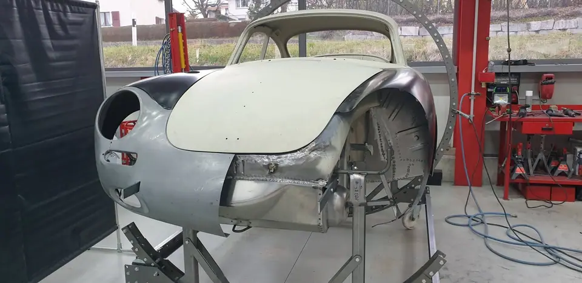
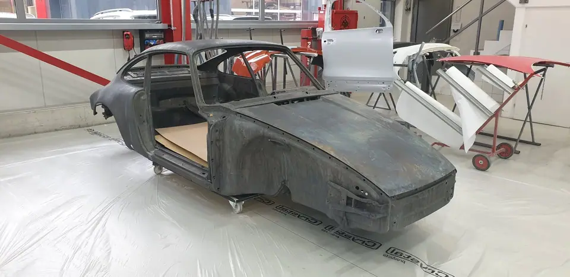
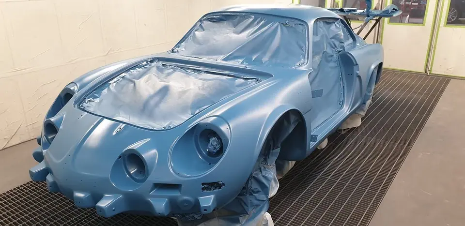
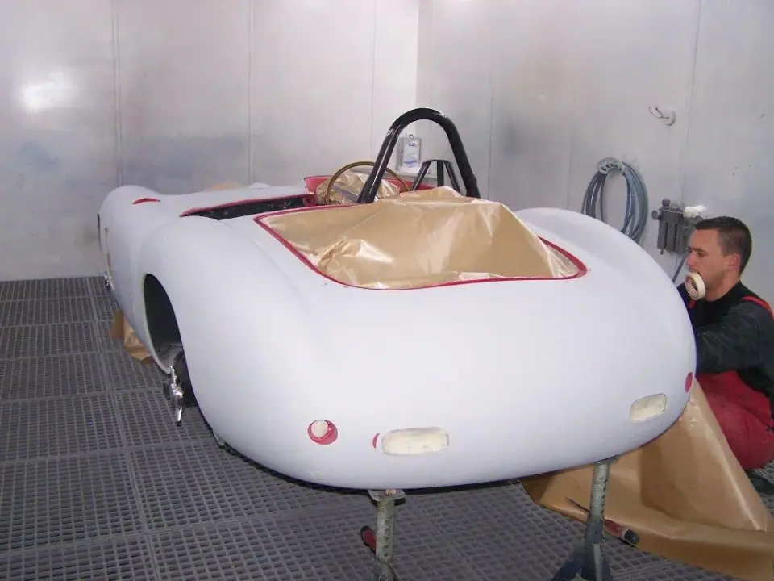
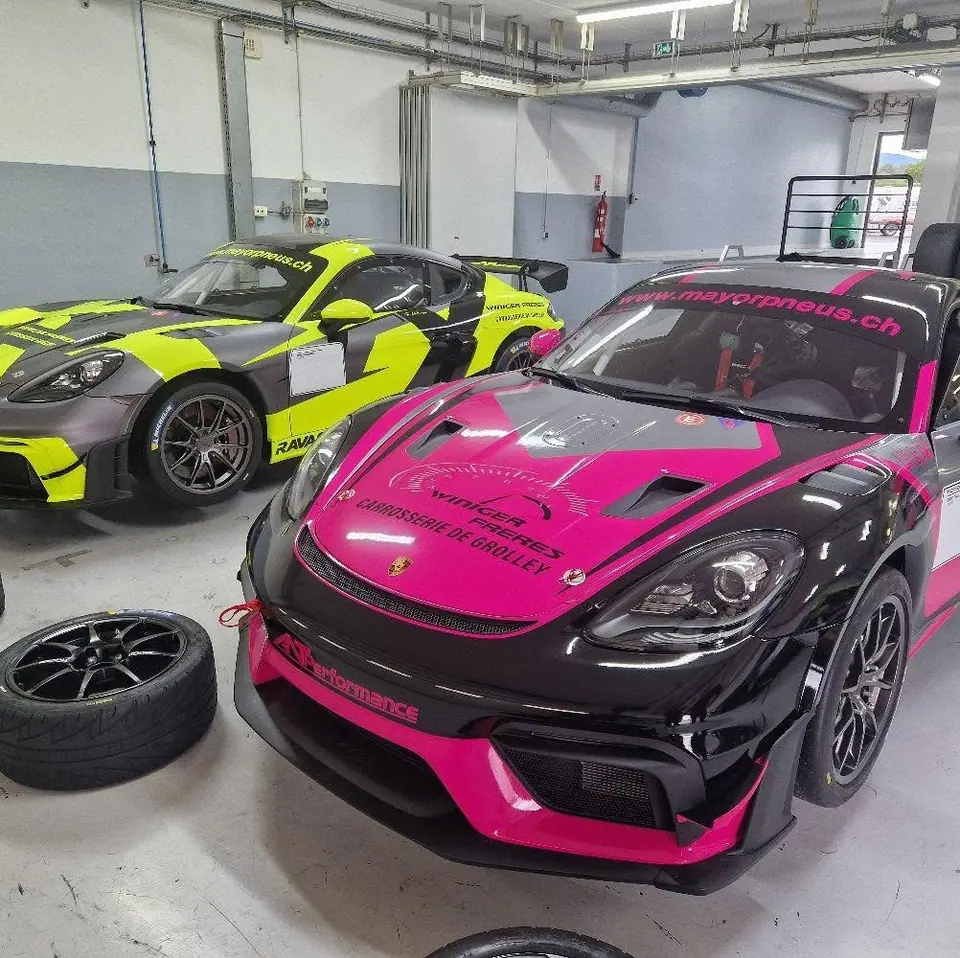
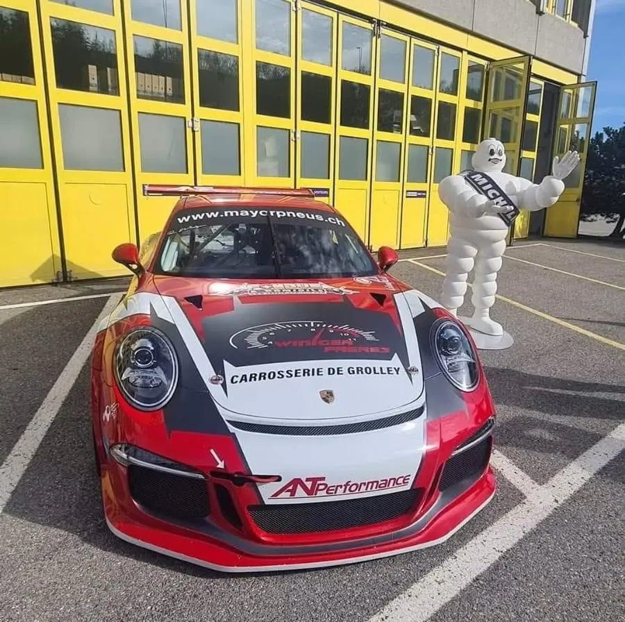
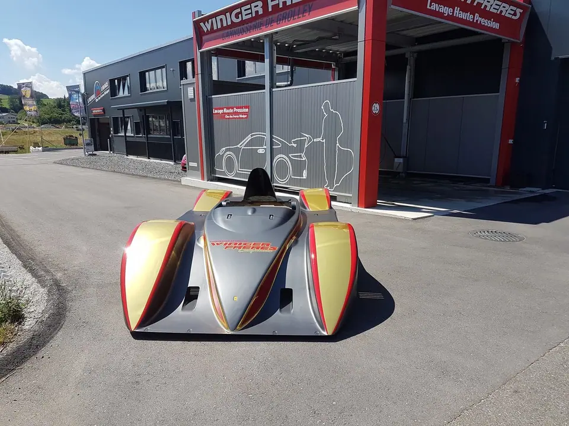
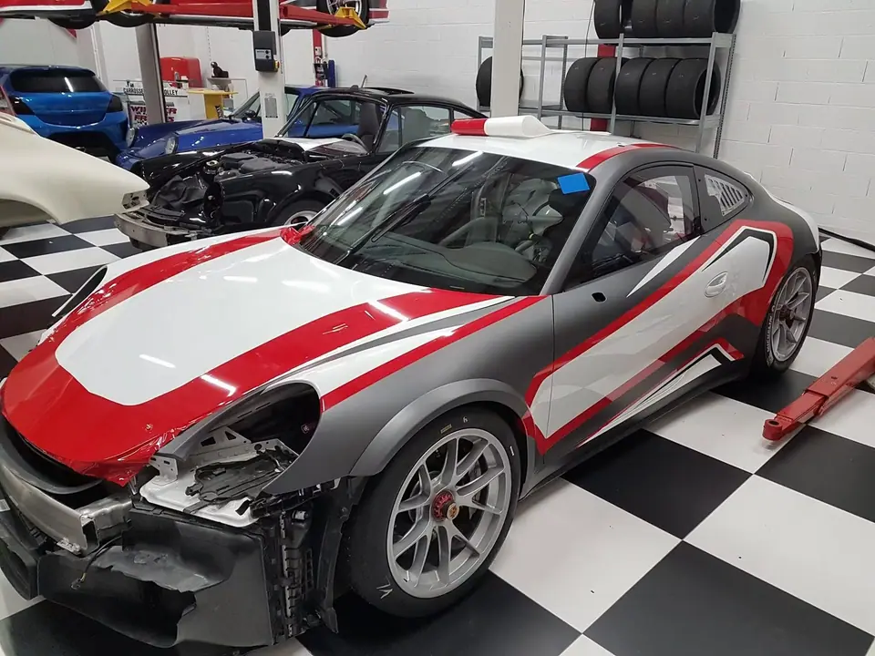
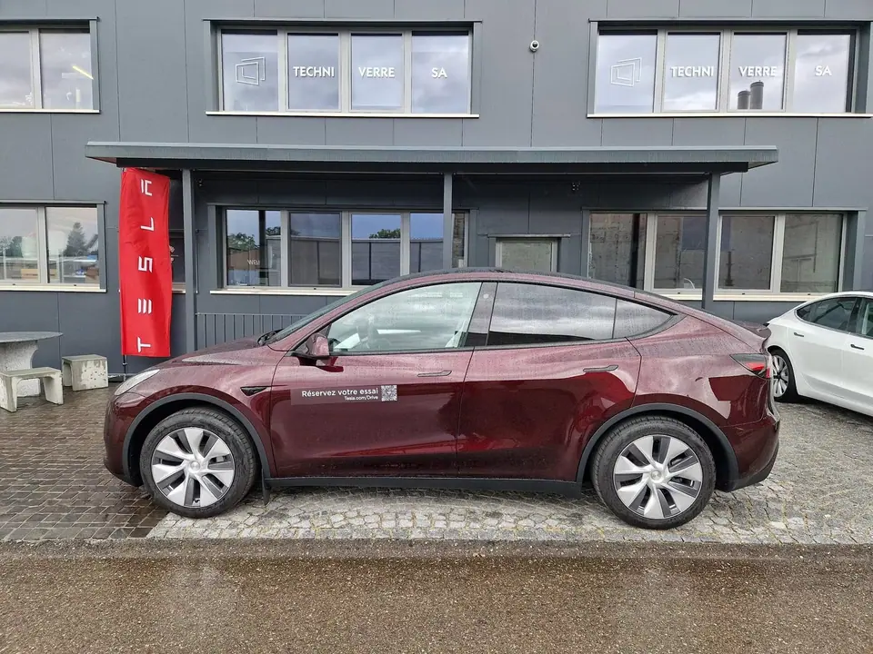

Prestige, collection & compétition
Paddock.
Une grande expérience acquise au fil des années sur les véhicules de sport, de prestige et de collection.
S2 / Sport & prestige
Les mêmes
exigences
que la marque.
Notre carrosserie répare régulièrement des marques prestigieuses. Spécialisés en véhicules de sport, de prestige et de collection, nous avons obtenu la reconnaissance de nombreux représentants de marques de prestige.
- 01Ferrari
- 02Aston Martin
- 03Maserati
- 04Bentley
- 05Porsche
- 06Lamborghini
- ··et d'autres marques
Marques citées par l'entreprise comme exemples de véhicules réparés. Aucun partenariat officiel n'est sous-entendu.

S3 / Collection & restauration
Rendre
son éclat.
Sur un véhicule de collection ou une voiture ancienne, la peinture nécessite la plupart du temps une restauration pour retrouver tout son éclat. Le travail est réalisé dans les règles de l'art, pour une qualité durable à un prix compétitif.
La peinture mate, très demandée aujourd'hui, requiert la même attention pour rester belle dans le temps.



S4 / Compétition
La course
dans le sang.
La compétition fait partie des domaines de spécialisation de l'entreprise depuis ses débuts. Une passion pour le sport automobile qui se ressent dans l'atelier.




Engagements, voitures et palmarès À compléter
S5 / Agrément constructeur · depuis mai 2021
TESLA
Approved
Body Shop

Membre du réseau d'ateliers de carrosserie approuvés par TESLA depuis mai 2021.
Nous avons suivi une formation rigoureuse pour garantir une prise en charge complète, au niveau d'exigence requis pour réparer un véhicule électrique de prestige en aluminium.
Les réparations TESLA demandent une connaissance précise de l'ensemble du véhicule et des systèmes électriques haute tension. Les Model S et X sont construites en aluminium, la Model 3 en acier et aluminium. Avec les aides à la conduite comme l'Autopilot, chaque réparation exige des compétences et des outils spécifiques, dont l'atelier est équipé.
Après un sinistre, chaque TESLA fait l'objet de contrôles et de (re)paramétrages spécifiques, pour la sécurité des occupants et des tiers.
- Étalonnage radar
- Obligatoire dès que le capteur radar, ou un composant à son contact, est réglé ou déposé. Sur Model S, après repose du carénage avant, et uniquement avec un parallélisme correct.
- Tôlerie
- Matériaux et méthodes spécifiques : chaleur et vibrations excessives peuvent décoller le patch butyle et le capteur à ultrasons.
- Peinture
- Épaisseur limitée à 300 microns (12 mils) dans la zone des capteurs à ultrasons.
- Haute tension
- Intervention sur les systèmes HT réservée à des professionnels qualifiés et certifiés TESLA.